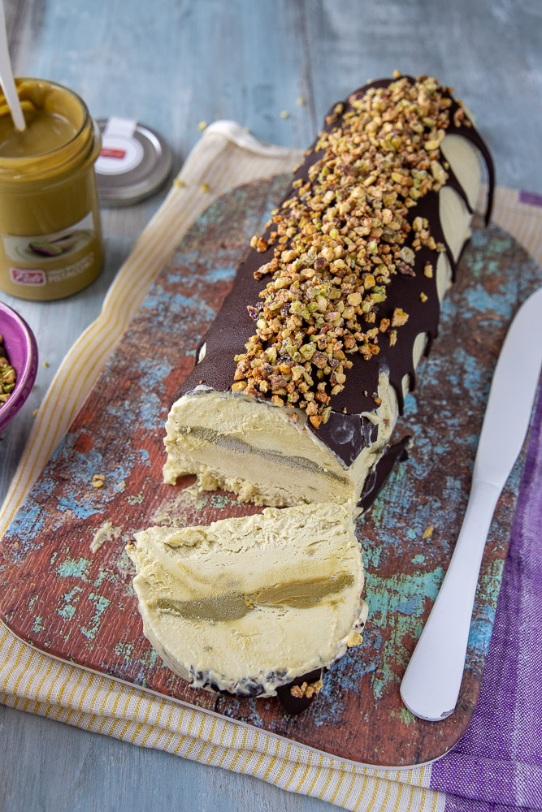

I DOLCI NON TROPPO DOLCI
DI CIX
Dolci con le mele
TORTA DI MELE AL RUM
MUFFIN ROSE DEL DESERTO
Dolci al pistacchio
TORTA GELATO AL PISTACCHIO
GELATO AL PISTACCHIO
Dolci speciali
TORTA AL VINO ROSSO
TIRAMISU' AL CIOCCOLATO BIANCO
TORTA DI MELE AL RUM
INGREDIENTI
- 3-4 mele
- 3 uova
- 200 g di zucchero
- 100 g di burro molto morbido
- 280 g di farina
- 1 bustina di lievito per dolci
- 100 g di latte
- 100 g di rum
- 1 limone buccia grattugiata
- cannella in polvere q.b.
Tagliate le mele a fettine, conditele con la cannella e la buccia di limone, mescolate bene con le mani. Montate le uova con lo zucchero fino a quando non sono spumose. Aggiungete il burro morbido, la farina alternandola al latte. Infine unite il rum ed il lievito setacciato. Unite all’impasto un terzo di mele.
Versate l'impasto in uno stampo imburrato ed infarinato da 24-26 cm (se la volete alta come la mia stampo 24 cm se la preferite più bassa e ricca di mele ad ogni fetta 26 cm)e coprite tutta la superficie con le restanti mele. Spolverate con zucchero semolato. Infornate in forno preriscaldato a 180° statico per circa 50-55 minuti.
MUFFIN ROSE DEL DESERTO
INGREDIENTI
- 180 g di farina 00
- 120 g di zucchero
- 1/2 bustina di lievito per dolci
- 2 uova a temperatura ambiente
- 280 g di farina
- 80 g di burro molto morbido oppure 70 g di olio di semi
- 1 mela
- 1 limone
- 40 g di corn flakes
- 50 g di uvetta o gocce di cioccolato

In una ciotola montate con le fruste elettriche le uova con lo zucchero per 2 minuti. Unite il burro molto morbido, e continuate a mescolare, unite la farina setacciata con il lievito e mescolate poco giusto il tempo di incorporarla ed avere un impasto cremoso e denso.
Sbucciate una mela e tagliatela a cubetti. Unite all'impasto la buccia di limone grattugiata, l'uvetta precedentemente ammorbidita in acqua e strizzata e la mela, mescolate con una spatola. Rivestite lo stampo da muffin con i pirottini oppure imburrate ed infarinate lo stampo. Riempiteli per 3/4 servendovi di un dosa gelato o 2 cucchiai. Mettete sopra i corn flakes. Infornate in forno preriscaldato a 180° statico e fate cuocere per circa 20 minuti. Prima di sfornare fate sempre la prova stecchino che deve uscire asciutto. Appena sfornati dopo qualche minuto togliete i muffin dallo stampo e fate raffreddare su di una gratella.
TORTA GELATO AL PISTACCHIO
INGREDIENTI
- 500 g di panna da montare fresca, non zuccherata
- 200 g di crema spalmabile al pistacchio
- 250 g di latte condensato
- 50 g di granella di pistacchi
- 30 g di zucchero
- 1 cucchiaino di acqua
- 1 confezione di glassa al cacao pronta oppure 50 g di cioccolato fondente sciolto con 25 g di burro

In una ciotola mescolate con un cucchiaio il latte condensato con la crema di pistacchio fino ad avere un composto cremoso ed abbastanza sodo. Montate la panna fino a quando non ha una bella consistenza soda. Con movimenti circolari dal basso verso l’alto incorporare la panna al latte condensato con crema di pistacchio fino ad avere un composto omogeneo. Mettete il gelato in freezer e fate riposare almeno 6 ore. Servite il vostro gelato al pistacchio.
Bagnate leggermente uno stampo da plumcake da 28 cm(leggi note) e fate aderire la pellicola alimentare. Versate metà del gelato, mettete al centro qualche cucchiaino di crema al pistacchio e stendetelo leggermente con uno stecco. Versate il rimanente gelato. Mettete in freezer per almeno 8 ore meglio tutta la notte.
Intanto preparate la copertura. In una padella mettete l'acqua e lo zucchero, fate sciogliere a fiamma bassa. Quando si formano tante bolle e il colore diventa più dorato aggiungete la granella di pistacchi e mescolate con un cucchiaio di legno. Non vi preoccupate se all'inizio lo zucchero tende a diventare grumoso, pian piano si scioglierà nuovamente per attaccarsi alla frutta secca. Quando la frutta è ben pralinata, ci vorranno circa 5 minuti, toglietela della padella e fatela raffreddare in un contenitore o teglia.
Fate sciogliere la glassa seguendo le istruzioni sulla confezione (leggi note). Fate leggermente intiepidire. Riprendete la torta gelato dal freezer, passate una lama lungo il perimetro per far passare l'aria e sformarla con facilità su di un piatto da portata. Decorate con la glassa al cacao e coprite subito prima che si solidifichi con la granella di pistacchi. Va conservata in freezer, tiratela fuori circa 10 minuti prima di servire e gustate la vostra torta gelato al pistacchio.
GELATO AL PISTACCHIO
INGREDIENTI
- 500 g di panna da montare fresca, non zuccherata
- 200 g di crema spalmabile al pistacchio
- 250 g di latte condensato
- Granella di pistacchi q.b.

In una ciotola mescolate con un cucchiaio il latte condensato con la crema di pistacchio fino ad avere un composto cremoso ed abbastanza sodo.
Montate la panna fino a quando non ha una bella consistenza soda. Con movimenti circolari dal basso verso l’alto incorporare la panna al latte condensato con crema di pistacchio fino ad avere un composto omogeneo. Se volete potete aggiungere anche dei pezzetti di croccante ai pistacchi. Versate il gelato in un contenitore, io uso la vaschetta del plumcake, decorate con granella di pistacchi. Mettete il gelato in freezer e fate riposare almeno 6 ore. Servite il vostro gelato al pistacchio cremoso e buonissimo.
TORTA AL VINO ROSSO
INGREDIENTI
- 150 g di farina
- 30 g g di cacao amaro
- 250 g di zucchero
- 80 g di cioccolato fondente
- 4 uova
- 150 ml vino rosso
- 200 g di burro oppure 150 g di olio di semi di arachidi
- 1 bustina di lievito per dolci
- 1 pizzico di sale
In un pentolino, mettete il cacao, il cioccolato ridotto in piccoli pezzi, lo zucchero, il vino ed il burro. Fate sciogliere il tutto, fino ad ottenere una crema omogenea. Tenetene da parte 150 g per la glassa finale della torta e fatela raffreddare a temperatura ambiente. In una ciotola capiente versate la crema al cioccolato rimasta, aggiungete le uova e mescolate 1 minuto con una frusta a mano. Unite la farina con il lievito setacciati e mescolate giusto il tempo di incorporarli.
Versate l'impasto in uno stampo a ciambella da 24 cm imburrato ed infarinato. Cuocere in forno preriscaldato statico a 170° per circa 35-40 minuti, vale sempre la prova stecchino che deve uscire asciutto. Sfornate e fate raffreddare bene su di una gratella.
Quando la torta è fredda, praticate dei fori con uno stecchino e versate la crema tenuta da parte ormai ben fredda. Decorate con acini di uva lavati e passati nello zucchero semolato.
TIRAMISU' AL CIOCCOLATO BIANCO
INGREDIENTI
- 250 ml di latte intero
- 2 tuorli
- 40 g di zucchero semolato
- 10 g di amido di mais
- 10 g di farina 00 oppure amido di mais
- 200 g di cioccolato bianco
Per la crema. Riscaldate il latte in un tegame. In una pentola mescolate con una frusta a mano i tuorli con lo zucchero, aggiungente l'amido e la farina e mescolate bene fino ad avere un composto chiaro e spumoso. Quando il latte ha raggiunto il primo bollore, versatelo filtrandolo con un colino in 2 tempi nella pentola con il composto di uova, prima una piccola parte per stemperare il composto di uova e poi il resto, mescolate bene e spostatevi sul fuoco. Fate cuocere a fiamma bassa e mescolate continuamente fino a quando la crema si addensa e diventa bella cremosa. Alla fine aggiungete il cioccolato ridotto in piccoli pezzetti e mescolate con vigore fino a farlo sciogliere. Trasferite la crema in un recipiente, coprite con pellicola a contatto e fate raffreddare.
Preparate il caffè e fatelo raffreddare. Spezzate in due i savoiardi se i vasetti sono piccoli. Riempite la sac à poche con la crema e fate un leggerissimo strato nel vasetto, disponete sopra i savoiardi bagnati nel caffè, coprite con la crema, cioccolato fondente a pezzetti, procedete in questo modo fino alla fine degli ingredienti(io ho fatto 3 strati). Terminate con la crema, riccioli di cioccolato bianco realizzati con pelapatate e granella di nocciole. Tenete in frigo fino al momento di servire.